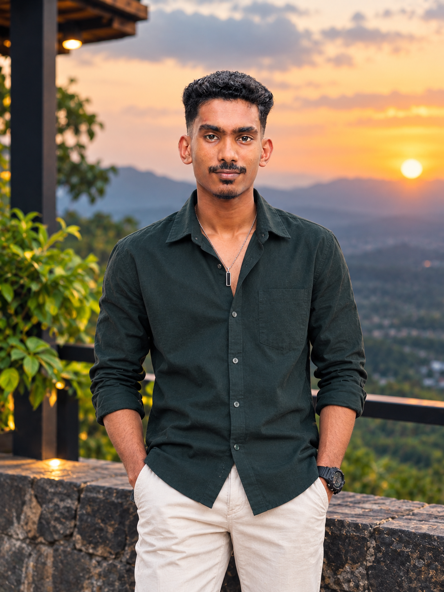

Human first.
Developer always
becoming.
A curious mind building a future one commit, one bug and one breakthrough at a time.

STILL LOADING...
I'm Oshan Udeesha.
I'm an undergraduate software engineering student with a strong interest in full-stack development and the technology shaping tomorrow. I enjoy turning ideas into functional digital experiences — from planning the structure to polishing the interface.
My current focus is strengthening my engineering fundamentals, building practical projects and learning how real-world applications are designed, secured and shipped.
Always in progress.
Build & ship
Developing full-stack applications and improving software design, APIs and database skills.
Go deeper
Strengthen data structures, algorithms, testing, deployment and application security.
Explore the edge
Connect software engineering with AI/ML and cybersecurity through meaningful projects.